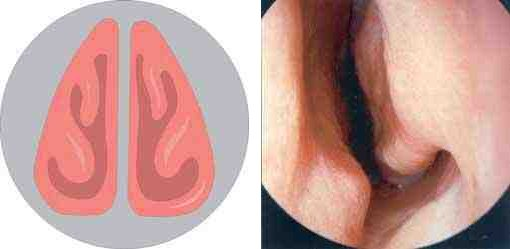

Словарь: П
- ПА сокращение
- паратонзиллярный абсцессПаратонзиллярный абсцесс, «Список сокращений», с. 3
- Пальцевое исследование носоглотки
- Метод, который применяют, когда заднюю риноскопию провести не удаётся (особенно у детей): указательным пальцем быстро проходят за мягкое нёбо в носоглотку и ощупывают сошник, хоаны, свод носоглотки с аденоидными разращениями и устья слуховых труб. Продолжается не более 2–3 с и противопоказано при острых катаральных явлениях из-за опасности отита.не из КР: Пальчун В. Т., Лучихин Л. А., Магомедов М. М. «Руководство по практической оториноларингологии» (М.: МИА, 2010), с. 23
- Пандемия
- (греч. «весь народ») — необычайно сильная эпидемия, распространившаяся на территории стран, континентов; высшая степень развития эпидемического процесса.Грипп у детей, «Термины и определения», с. 7
- Паническая атака (паника)
- непредсказуемый, мучительный для пациента приступ тяжелой, ярко выраженной тревоги, сопровождаемый страхом или беспокойством в сочетании с различными вегетативными (соматическими) симптомами.Посттравматическое стрессовое расстройство, «Термины и определения»
- ПАО сокращение
- приобретённый ангиоотёкНаследственный ангиоотёк, «Список сокращений», с. 4
- ПАП сокращение
- периоперационная антибиотикопрофилактикаПерелом верхней челюсти, «Список сокращений», с. 4; Множественные переломы мозгового и лицевого черепа, «Список сокращений», с. 4
- Папиллома
- Доброкачественная опухоль из покровного эпителия в виде сосочкового разрастания, выступающего над поверхностью (экзофитный рост); бывает одиночной и множественной. Образование множественных папиллом называют папилломатозом.не из КР: Бабияк В. И., Накатис Я. А., Говорун М. И. «Оториноларингология. Руководство», т. 2 (СПб.: Питер, 2009), с. 200; Бабияк В. И., Накатис Я. А., Говорун М. И. «Оториноларингология. Руководство», т. 1 (СПб.: Питер, 2009), с. 385
- Папилломатоз
- Образование множественных папиллом; встречается на коже, слизистой оболочке полости рта, носа, околоносовых пазух, глотки, на голосовых складках. Реже наблюдается диффузный папилломатоз слизистых оболочек гортани.не из КР: Бабияк В. И., Накатис Я. А., Говорун М. И. «Оториноларингология. Руководство», т. 1 (СПб.: Питер, 2009), с. 385; Бабияк В. И., Накатис Я. А., Говорун М. И. «Оториноларингология. Руководство», т. 2 (СПб.: Питер, 2009), с. 200
- Парагрипп
- Острая респираторная вирусная инфекция, вызываемая вирусом парагриппа человека (HPIV).не из КР: КР «Острая респираторная вирусная инфекция (ОРВИ)», раздел «Этиология и патогенез», с. 9
- Парадентальная киста
- Воспалительная киста, возникающая рядом с жизнеспособным зубом, чаще с его боковой поверхности, в результате воспаления в зубодесневом кармане; как правило, развивается после перикоронита вокруг частично прорезавшегося нижнего третьего моляра, поэтому типична для молодых людей (18–25 лет). Составляет 3–5% кист челюстей; по гистологической картине сходна с корневой кистой, диагноз опирается на клинические и рентгенологические данные; излечивает энуклеация.не из КР: Watkinson J. C., Clarke R. W. (eds). Scott-Brown’s Otorhinolaryngology, Head and Neck Surgery, 8th ed., vol. 3, p. 447 PDF
- Паракузия Виллизия
- Лучшее восприятие речи в условиях шума, чем в тишине (paracusis Willisii); характерный признак отосклероза, встречается примерно у половины больных. Более характерна для выраженной фиксации стремени при сохранной костной проводимости; при переходе в смешанную форму тугоухости встречается реже.не из КР: Нацруководство «Оториноларингология» под ред. В. Т. Пальчуна, гл. 11 «Болезни уха», раздел «Отосклероз»
- Паралич Белла 2 значения
- 1Односторонний периферический паралич лицевого нерва с острым началом, без выявляемой причины и без поражения других черепных нервов; диагноз исключения. Заболеваемость около 20 на 100 000 населения; чаще встречается при сахарном диабете и в III триместре беременности. Нередко начинается с боли за ухом, развивается за 2–5 дней; паралич частичный в 30% и полный в 70% случаев, возможны гиперакузия, нарушение вкуса и снижение слезоотделения.не из КР: Probst R., Grevers G., Iro H. Basic Otorhinolaryngology (Thieme), с. 294 (PDF 304)В разборах: Саркоидоз
- 2идиопатическая форма НЛН.Краниальные мононейропатии у взрослых, «Термины и определения», с. 7В разборах: Краниальные мононейропатии у взрослых
- Паралич гортани
- длительное более 6 мес. отсутствие подвижности мышц гортани вследствие нарушения их иннервации.Парезы и параличи гортани, «Термины и определения», с. 5
- Паранеопластический синдром
- клинико-лабораторные проявления злокачественной опухоли, обусловленное неспецифическими реакциями со стороны различных органов и систем или эктопической продукцией опухолью биологически активных веществ, а не её локальным или метастатическим ростом.Вирусные менингиты у детей, «Термины и определения», с. 6
- Паратонзиллит
- Воспаление околоминдаликовой клетчатки; сравнительно частое местное осложнение ангины или хронического тонзиллита. Различают отёчную, инфильтративную и абсцедирующую формы.не из КР: Пальчун В. Т., Лучихин Л. А., Магомедов М. М. «Руководство по практической оториноларингологии» (М.: МИА, 2010), с. 302
- Паратонзиллярная клетчатка
- Клетчатка, окружающая нёбную миндалину (околоминдаликовая). Её воспаление называют паратонзиллитом, а нагноение — паратонзиллярным абсцессом.не из КР: Пальчун В. Т., Лучихин Л. А., Магомедов М. М. «Руководство по практической оториноларингологии» (М.: МИА, 2010), с. 302–303
- Паратонзиллярный абсцесс (ПА)
- заболевание, характеризующееся гнойным расплавлением околоминдаликовой клетчатки, располагающейся между псевдокапсулой небной миндалины и глоточной фасцией, покрывающей мышечные констрикторы глотки. [1; 2; 3].Паратонзиллярный абсцесс, «Термины и определения», с. 4
- Парафарингеальное пространство
- Окологлоточное пространство; делится на заглоточное и боковое глоточное, заполнено рыхлой соединительной тканью, клетчаткой и лимфатической тканью. В нём проходит сосудисто-нервный пучок шеи, оно прямо сообщается с позадипищеводной клетчаткой и средостением.не из КР: Пальчун В. Т., Лучихин Л. А., Магомедов М. М. «Руководство по практической оториноларингологии» (М.: МИА, 2010), с. 264
- Парафарингеальный абсцесс
- Нагноение в окологлоточном пространстве. Чаще всего гной прорывается сюда из околоминдаликового абсцесса (в передний отдел пространства); возможны также одонтогенное или аурикулярное происхождение.не из КР: Бабияк В. И., Накатис Я. А., Говорун М. И. «Оториноларингология. Руководство», т. 1 (СПб.: Питер, 2009), с. 490, 491, 492
- Парацентез
- Искусственное прободение барабанной перепонки с лечебной целью; в практику введено для удаления воспалительного экссудата из барабанной полости.не из КР: Бабияк В. И., Накатис Я. А., Говорун М. И. «Оториноларингология. Руководство», т. 2 (СПб.: Питер, 2009), с. 596
- Парвовирус В19
- ДНК-вирус из семейства Parvoviridae, обладающий тропностью к мембранному рецептору эритроидных клеток.Приобретенная чистая красноклеточная аплазия (эритробластопения), «Термины и определения»
- Парез гортани
- временное до 6 мес. отсутствие или ограничение подвижности мышц гортани вследствие нарушения их иннервации.Парезы и параличи гортани, «Термины и определения», с. 5
- Парентеральное питание 2 значения
- 1вид нутритивной поддержки, предусматривающий назначение питательных субстратов в сосудистое русло, минуя ЖКТ для полного или частичного обеспечения потребностей организма.Недостаточность питания у детей старше 1 года (Белково-энергетическая недостаточность), «Термины и определения»В разборах: Злокачественные опухоли слюнных желёз, Острый ларингит, Рак ротоглотки, Травма гортани
- 2способ введения питательных веществ в организм путем внутривенной инфузии.Недостаточность питания (мальнутриция) у пациентов пожилого и старческого возраста, «Термины и определения»В разборах: Химический ожог пищевода
- Парестезия 2 значения
- 1специфический вид нарушения чувствительности, который сопровождается субъективными ощущениями покалывания, жжения, ползания мурашек. Является следствием раздражения чувствительных нервных волокон.Мигрень у детей, «Термины и определения», с. 4; Мигрень, «Термины и определения»В разборах: Одонтогенный остеомиелит челюсти, Мигрень у детей, Мигрень, Рак гортани
- 2спонтанное или вызванное легким тактильным, термическим раздражением, движением ощущение в виде покалывания, ползания мурашек, сдавливания, стягивания в каком-либо участке тела.Краниальные мононейропатии у взрослых, «Термины и определения», с. 6В разборах: Рак гортаноглотки, Простой герпес у взрослых, Доброкачественные остео- и хондрогенные опухоли носа и пазух, Краниальные мононейропатии у взрослых, Воспалительные заболевания челюстей у детей
- ПАРМ сокращение
- передняя активная риноманометрияАномалии и деформации зубочелюстной системы и лицевого черепа, «Список сокращений», с. 4
- Пародонт
- Совокупность тканей, удерживающих зуб в лунке: цемент корня, костная стенка альвеолы и десна.не из КР: Probst R., Grevers G., Iro H. Basic Otorhinolaryngology: A Step-by-Step Learning Guide (Thieme), с. 71 (термин periodontium)
- Пароксизмальное состояние 2 значения
- 1припадок (приступ) церебрального происхождения, проявляющийся на фоне видимого здоровья или при внезапном ухудшении хронического патологического состояния, характеризующийся кратковременностью, обратимостью возникающих расстройств, наклонностью к повторениям, стереотипностью.Мигрень у детей, «Термины и определения», с. 4В разборах: Мигрень у детей
- 2приступ церебрального происхождения, проявляющийся на фоне видимого здоровья или при внезапном ухудшении хронического патологического состояния, характеризующийся кратковременностью, обратимостью возникающих расстройств, склонностью к повторениям, стереотипностью.Головная боль напряжения у детей, «Термины и определения», с. 5В разборах: Головная боль напряжения у детей
- Пассивная иммунизация
- формирование временного иммунитета за счет введения в организм антител в виде иммуноглобулинов или антитоксических сывороток (по АТХ-классификации: Иммунных сывороток).ВИЧ-инфекция у взрослых, «Термины и определения»
- Патологическое состояние
- изменения организма, возникающие в связи с воздействием патогенных и (или) физиологических факторов и требующие оказания медицинской помощи.Ожоги. Ожоги дыхательных путей, «Термины и определения», с. 7
- Пахидермия
- Очаговое утолщение (сосочковидная пролиферация) слизистой оболочки гортани. Чаще располагается на задней стенке и в межчерпаловидном пространстве (бугристая серая поверхность, pachydermia diffusa), реже — на голосовых отростках черпаловидных хрящей, где при симметричном расположении образует контактные язвы. Препятствует смыканию голосовых складок, голос становится грубым и быстро утомляется; свидетельствует о хроническом гипертрофическом ларингите.не из КР: Бабияк В. И. и соавт. «Оториноларингология. Руководство», т. 2 (СПб.: Питер, 2009), с. 112–114 PDF
- ПБ сокращение 2 значения
- 1пищевод БарреттаГастроэзофагеальная рефлюксная болезнь у детей, «Список сокращений», с. 4В разборах: Гастроэзофагеальная рефлюксная болезнь у детей
- 2прогрессия болезниРак носоглотки у детей, «Список сокращений», с. 4В разборах: Рак носоглотки у детей
- ПВТ сокращение
- противовирусная терапияПростой герпес у взрослых, «Список сокращений», с. 4
- ПГ сокращение 2 значения
- 1паралич/парез гортаниПарезы и параличи гортани, «Список сокращений», с. 4В разборах: Парезы и параличи гортани
- 2простой герпесПростой герпес у взрослых, «Список сокращений», с. 4В разборах: Простой герпес у взрослых
- ПДЕ сокращение
- потенциал двигательной единицыКраниальные мононейропатии у взрослых, «Список сокращений», с. 4
- ПДКВ сокращение
- положительное давление в конце выдохаКоронавирусная инфекция COVID-19, «Список сокращений», с. 5
- ПДУ сокращение
- предельно допустимый уровеньПотеря слуха, вызванная шумом, «Список сокращений», с. 4
- Первичная опухоль ( tumo ur )
- первичный очаг злокачественного новообразования, основными характеристиками которого являются размеры и местное распространение.Рак молочной железы , «Термины и определения»
- Первичная цилиарная дискинезия
- Редкое наследственное заболевание, в основе которого лежит дефект ультраструктуры ресничек эпителия респираторного тракта, нарушающий их двигательную функцию. Характеризуется поражением всех отделов респираторного тракта с формированием хронического воспалительного процесса.не из КР: КР «Другие уточнённые врождённые аномалии органов дыхания (первичная цилиарная дискинезия)», раздел «Термины и определения», раздел 1.1
- Первичные ГБ
- идиопатические (доброкачественные) цефалгии, которые не связаны с органической патологией головного мозга, церебральных сосудов, любых структур головы и шеи и системными заболеваниями.Мигрень, «Термины и определения», с. 6
- Первичные головные боли
- идиопатические (доброкачественные) ГБ, которые не связаны с органической патологией головного мозга, церебральных сосудов, любых структур головы и шеи и системными заболеваниями.Головная боль напряжения, «Термины и определения», с. 5; Головная боль напряжения (ГБН), «Термины и определения»
- Первичные иммунодефициты (ПИД)
- группа врожденных заболеваний иммунной системы, насчитывающая более 450 нозологий, связанных с утратой, уменьшением или неправильным функционированием одного или нескольких ее звеньев.[1–5] Гипогаммаглобулинемия - снижение уровня IgG (иммуноглобулин G) в крови ниже 2-х стандартных отклонений от возрастной нормы у детей и ниже 4,5 г/л (грамм/литр) у взрослых. [5] Агаммаглобулинемия - снижение уровня IgG в крови ниже 1,0 г/л в сочетании с уровнем IgM (иммуноглобулин М) в крови ниже 0,2 г/л и уровнем IgA (иммуноглобулин А) в крови ниже 0,1 г/л при уровне периферических CD19+ В-клеток ниже, чем 2%.[5] Претрансфузионный уровень IgG – уровень иммуноглобулина G, исследованный в день перед введением иммуноглобулина человека нормального (т.е. наиболее низкий его показатель в течение месяца).Первичные иммунодефициты с недостаточностью синтеза антител, «Термины и определения», с. 5
- Первичный гиперпаратиреоз (ПГПТ)
- эндокринное заболевание, характеризующееся избыточной секрецией ПТГ при верхне-нормальном или повышенном уровне кальция крови вследствие первичной патологии ОЩЖ. ПГПТ проявляется полиорганными нарушениями различной степени выраженности и, как следствие, может приводить к существенному снижению качества жизни, инвалидизации пациентов, повышенному риску преждевременной смерти [1].Первичный гиперпаратиреоз , раздел 1.1
- Первичный (первый) эпизод герпеса
- впервые выявленные клинические проявления герпетической инфекции.Простой герпес у взрослых, «Термины и определения», с. 7
- Первый этап реабилитации
- реабилитация в период специализированного лечения основного заболевания (включая хирургическое лечение/химиотерапию/лучевую терапию) в отделениях медицинских организаций по профилю основного заболевания.Рак гортаноглотки, «Термины и определения», с. 5
- Пергаментный хруст
- Симптом Рунге — Дюпюитрена при кисте челюсти: при пальпации истончённой костной стенки кисты ощущается её пружинистость.не из КР: КР «Кисты челюстно-лицевой области и шеи», раздел 2.1, с. 18–19
- Перевязка наружной сонной артерии
- Операция при рецидивирующих тяжёлых носовых кровотечениях после травм головы и шеи, а также предварительный этап вмешательств по поводу опухолей головы и шеи; доступ — разрез по переднему краю грудино-ключично-сосцевидной мышцы.не из КР: Пальчун В. Т., Лучихин Л. А., Магомедов М. М. «Руководство по практической оториноларингологии» (М.: МИА, 2010), с. 245
- Переднее и заднее носовое кровотечение
- По определению, предложенному в Scott-Brown, переднее носовое кровотечение — кровотечение из источника кпереди от плоскости грушевидного отверстия, в том числе из передней части перегородки; источник обычно легко найти, лечение несложное. Заднее — кровотечение из сосуда кзади от грушевидного отверстия, то есть из глубины полости носа (боковая стенка, перегородка, дно); именно оно создаёт наибольшие трудности. Ранее Пирсон называл задним кровотечение, источник которого не удаётся найти при осмотре с лобным рефлектором, сосудосуживающим средством и отсосом.не из КР: Watkinson J. C., Clarke R. W. (eds.) «Scott-Brown's Otorhinolaryngology Head & Neck Surgery», 8th ed. (CRC Press, 2018), т. 1, гл. 106, PDF с. 1221
- Передняя комиссура
- Острый угол, который образуют передние концы голосовых складок у места их отхождения от щитовидного хряща.не из КР: Пальчун В. Т., Лучихин Л. А., Магомедов М. М. «Руководство по практической оториноларингологии» (М.: МИА, 2010), с. 51
- Передняя носовая ость
- Костный выступ по срединной линии в нижней части грушевидной апертуры.не из КР: Гайворонский И. В. и соавт. «Функциональная анатомия ЛОР-органов» (СПб.: СпецЛит, 2022), с. 5 (PDF)
- Передняя риноскопия
- Осмотр преддверия и полости носа через ноздри с помощью носового расширителя, который приподнимает крылья носа и делает полость доступной для освещения. Каждую половину носа осматривают поочерёдно.не из КР: Пальчун В. Т., Лучихин Л. А., Магомедов М. М. «Руководство по практической оториноларингологии» (М.: МИА, 2010), с. 17
- Передняя стенка полости носа
- представлена грушевидное отверстие.Рак полости носа и придаточных пазух, «Термины и определения», с. 4
- Передняя стенка ротоглотки
- корень языка, валлекулы.Рак ротоглотки, «Термины и определения», с. 5
- Передняя тампонада
- Остановка носового кровотечения введением в полость носа марлевой турунды (длиной до 70 см, с мазью или гемостатической пастой), которую укладывают петлями вдоль дна полости носа (тампонада по Микуличу).не из КР: Пальчун В. Т., Лучихин Л. А., Магомедов М. М. «Руководство по практической оториноларингологии» (М.: МИА, 2010), с. 241
- Переключённые В-клетки
- Переключённые В-лимфоциты (CD19+CD27+IgD−) не экспрессируют IgD, но экспрессируют IgG, IgA и IgE. Служат показателем нормальной активации и развития В-лимфоцитов в герминативных центрах лимфатических узлов и других вторичных лимфоидных тканях. При подозрении на ОВИН их малое количество (менее 70% от возрастной нормы) — один из критериев диагноза.не из КР: КР «Первичные иммунодефициты с преимущественной недостаточностью синтеза антител», раздел «Термины и определения»; таблица 1
- Переключенные В-лимфоциты (CD19+CD27+IgD−)
- В-лимфоциты, которые не экспрессируют IgD (иммуноглобулин D), экспрессируют IgG, IgA и IgE (иммуноглобулин E), являются индикаторами нормальной активации и развития В-лимфоцитов в герминативных центрах лимфатических узлов и других вторичных лимфоидных тканях.[6]Первичные иммунодефициты с недостаточностью синтеза антител, «Термины и определения», с. 5
- Перекрёстная окклюзия
- Нарушение смыкания зубных рядов в поперечном направлении (по трансверсали), соответствующее сужению челюсти.не из КР: КР «Врожденные и приобретенные аномалии и деформации зубочелюстной системы и лицевого черепа», раздел 1.5, с. 7
- Перелом верхней челюсти
- повреждение верхней челюсти с нарушением ее целостности.Перелом верхней челюсти, раздел 1.1
- Перелом по типу «зеленой ветки» (ивового прута, поднадкостничный)
- поперечный разрыв кортикального слоя на одной стороне челюсти без перелома противоположного кортикального слоя.Множественные переломы мозгового и лицевого черепа, «Термины и определения», с. 7
- Перелом скуловой кости
- повреждение скуловой кости с нарушением ее целости или синостозов между скуловой и окружающими ее костями.Перелом скуловой кости, раздел 1.1
- Переломы хрящей гортани
- Чаще страдает щитовидный хрящ: перелом идёт по срединной линии, нередки переломы его рогов. Смещённые отломки перфорируют слизистую оболочку и вызывают внутреннее кровотечение и эмфизему окружающих тканей.не из КР: Бабияк В. И., Накатис Я. А., Говорун М. И. «Оториноларингология. Руководство», т. 2 (СПб.: Питер, 2009), с. 159
- Перикоронит
- Воспаление тканей вокруг частично прорезавшегося или ретинированного зуба, чаще нижнего зуба мудрости. Из этой области воспаление может распространяться по клетчаточным пространствам на шею.не из КР: Watkinson J. C., Clarke R. W. (eds.) «Scott-Brown's Otorhinolaryngology Head & Neck Surgery», 8th ed. (CRC Press, 2018), т. 3, с. 447 и 689 (PDF)
- Перилимфа
- Жидкость перилимфатического пространства внутреннего уха; общий объём у человека около 78 мм³. По химическому составу сходна с другими внеклеточными жидкостями, в частности со спинномозговой жидкостью и сывороткой крови; образуется как фильтрат сосудов спиральной связки.не из КР: Гайворонский И. В. и соавт. «Функциональная анатомия ЛОР-органов» (СПб.: СпецЛит, 2022), с. 77 PDF
- Перилимфатическая фистула
- Сообщение между перилимфатическим пространством и средним ухом, как правило через овальное или круглое окно. Причиной может быть воспаление в ухе, врождённая аномалия, а также прямая травма или баротравма среднего уха; вызывает вестибулярные и слуховые нарушения.не из КР: Probst R., Grevers G., Iro H. Basic Otorhinolaryngology (Thieme), с. 286; Behrbohm H., Kaschke O., Nawka T. Ear, Nose, and Throat Diseases with Head and Neck Surgery (Thieme), PDF с. 305
- Перилимфатические очаги
- При компьютерной томографии множественные мелкие очаги располагаются вдоль бронхососудистых пучков, междолевых щелей, костальной плевры и в междольковых перегородках, вызывая их неравномерное («чётковидное») утолщение; такое распределение очагов определяется как перилимфатическое. Изменения обычно преобладают в средних отделах лёгких, часто в прикорневой области.не из КР: КР «Саркоидоз», раздел 1.6, с. 28
- Перинатальный период
- с 22 недели гестации до 7-го дня жизниВИЧ-инфекция у детей, «Термины и определения»
- Период новорожденности
- первые 28 дней жизниВИЧ-инфекция у детей, «Термины и определения»
- Периодонтит
- Воспаление тканей вокруг верхушки корня зуба при проникновении инфекции из пульпы через верхушечное отверстие. Острый верхушечный периодонтит проявляется болезненностью зуба при давлении или постукивании; при хроническом течении формируется периапикальная гранулёма — бессимптомное чётко очерченное просветление у верхушки корня на рентгенограмме. Распространение процесса приводит к острому околозубному (дентоальвеолярному) абсцессу с болью, припухлостью и нагноением; лечение — вскрытие и эндодонтическое лечение или удаление зуба.не из КР: Watkinson J. C., Clarke R. W. (eds). Scott-Brown’s Otorhinolaryngology, Head and Neck Surgery, 8th ed., vol. 3, p. 701 PDF
- Периостит
- воспалительное заболевание, вовлекающее надкостницу альвеолярного отростка и тела челюсти из одонтогенного или неодонтогенного очага.Воспалительные заболевания челюстей у детей, «Термины и определения», с. 4
- Периостотомия 2 значения
- 1Периостотомия – вскрытие и дренирование поднадкостничного очага воспаления.Одонтогенный остеомиелит челюсти, «Термины и определения», с. 4В разборах: Одонтогенный остеомиелит челюсти
- 2Вскрытие поднадкостничного абсцесса внутриротовым доступом с обеих сторон муфтообразного инфильтрата при обострении остеомиелита челюсти.не из КР: КР «Воспалительные заболевания челюстей», раздел 3, с. 29В разборах: Воспалительные заболевания челюстей у детей
- Перитонит
- острое воспаление брюшины, сопровождающееся комплексом патологических процессов, протекающих в брюшной полости и приводящих к системной воспалительной реакции, органной дисфункции, сепсису.Острый аппендицит и перитонит у детей, раздел 1.1
- Периферическая сенситизация
- повышенный ответ возбужденных ноцицептивных нейронов периферической нервной системы на обычную и/или подпороговую стимуляцию.Головная боль напряжения, «Термины и определения», с. 5; Мигрень, «Термины и определения», с. 6
- Перихондрит
- Воспаление надхрящницы или тканей вокруг хряща. Перихондрит ушной раковины возникает в результате инфицирования и воспаления раковины после травмы.не из КР: Нацруководство «Оториноларингология» под ред. В. Т. Пальчуна, гл. 11 «Болезни уха», раздел «Перихондрит ушной раковины»
- Перкуссия
- Физикальный метод обследования, основанный на простукивании определённых участков тела и анализе возникающих звуков.не из КР: КР «Закрытая травма груди», раздел «Термины и определения», раздел 1.1
- Пероральные антикоагулянты
- в соответствии с АТХ классификацией – антагонисты витамина К – B01AA, прямые ингибиторы тромбина B01AE и прямые ингибиторы фактора Xa-B01AF)Фибрилляция и трепетание предсердий, «Термины и определения»
- Перстневидный хрящ
- Непарный хрящ, служащий основанием гортани: снизу он прочно связан с трахеей, а сверху и спереди — со щитовидным хрящом связками и суставами. К его пластинке сзади причленяются черпаловидные хрящи.не из КР: Бабияк В. И., Накатис Я. А., Говорун М. И. «Оториноларингология. Руководство», т. 2 (СПб.: Питер, 2009), с. 16–17
- Перстнечерпаловидный сустав
- Сустав, соединяющий черпаловидный хрящ с пластинкой перстневидного хряща. В нём возможны два вида зеркальных движений, в том числе вращение вокруг вертикальной оси пирамиды хряща.не из КР: Бабияк В. И., Накатис Я. А., Говорун М. И. «Оториноларингология. Руководство», т. 2 (СПб.: Питер, 2009), с. 17
- Петрозит
- гнойно-воспалительный процесс в пирамиде височной кости.Мастоидит, «Термины и определения», с. 5
- ПЖК сокращение
- подкожно-жировая клетчаткаМножественные переломы мозгового и лицевого черепа, «Список сокращений», с. 4
- ПЗУ сокращение
- поверхностная зона ухаТравма уха, «Список сокращений», с. 4
- ПИД сокращение
- Первичный иммунодефицитПервичные иммунодефициты с недостаточностью синтеза антител, «Список сокращений», с. 3
- ПИЛБ сокращение
- персистирующая идиопатическая лицевая больКраниальные мононейропатии у взрослых, «Список сокращений», с. 4
- Пиодермии
- инфекционные заболевания кожи, развивающиеся в результате внедрения в нее возбудителей – патогенных пиококков, наиболее частыми из которых являются стафилококки и стрептококки.Пиодермии, «Термины и определения»
- Пирамида височной кости
- Часть височной кости, в толще которой у её основания расположен костный лабиринт (преддверие, полукружные каналы, улитка), образующий часть медиальной стенки барабанной полости.не из КР: Бабияк В. И., Накатис Я. А., Говорун М. И. «Оториноларингология. Руководство», т. 2 (СПб.: Питер, 2009), с. 280
- ПИФ сокращение
- прямая иммунофлюоресценцияГрипп у взрослых, «Список сокращений», с. 5
- Пищевая аллергия (ПА)
- вызванная приемом пищевого продукта патологическая реакция, в основе которой лежат иммунные механизмы (специфические IgE-опосредованные реакции, клеточный иммунный ответ (не IgE-опосредованные) или их сочетание – реакции смешанного типа). Использование термина «пищевая гиперчувствительность» в отношении иммунологически обусловленных реакций на пищу в настоящее время нецелесообразно [1].Пищевая аллергия, раздел 1.1
- Пищевод Барретта
- Приобретённое состояние, осложнение длительно текущей гастроэзофагеальной рефлюксной болезни: нормальный многослойный плоский эпителий пищевода замещается метапластическим цилиндроклеточным.не из КР: КР «Гастроэзофагеальная рефлюксная болезнь у детей», раздел «Диагностика», с. 17
- Пищеводная манометрия
- Измерение внутрипросветного давления на разных уровнях пищевода; позволяет определить границы нижнего пищеводного сфинктера, его состоятельность и способность к расслаблению при глотании. Высокоразрешающая манометрия использует датчики с шагом 1 см, обычная — с шагом 3–5 см.не из КР: КР «Гастроэзофагеальная рефлюксная болезнь у детей», раздел «Диагностика», с. 22; Behrbohm H., Kaschke O., Nawka T. et al. «Ear, Nose, and Throat Diseases with Head and Neck Surgery», с. 1014 PDF
- Пищеводная рвота
- Рвота, возникающая при застревании большого куска пищи, закупоривающего просвет пищевода, или при полной непроходимости пищевода; появляется сразу после еды или спустя время, рвотные массы без кислого запаха, рвота может быть навязчивой, пока пищевые массы не выйдут из просвета.не из КР: КР «Химический ожог пищевода», раздел «Клиническая картина», с. 13
- ПК сокращение
- полукружный каналОтосклероз, «Список сокращений», с. 3
- ПКИГ сокращение
- иммуноглобулин человека нормальный для подкожного введенияПервичные иммунодефициты с недостаточностью синтеза антител, «Список сокращений», с. 4
- ПКИТ сокращение
- подкожная иммунотерапияАллергический ринит, «Список сокращений», с. 5; Бронхиальная астма, «Список сокращений», с. 8
- ПКН сокращение
- перелом костей носаТравма носа, «Список сокращений», с. 4
- ПКТ сокращение
- прокальцитонинКоронавирусная инфекция COVID-19, «Список сокращений», с. 5; Менингококковая инфекция у детей, «Список сокращений», с. 3
- Плазмаферез
- неселективный метод экстракорпоральной гемокоррекции, в основе которого лежит полное или частичное удаление плазмы, выделенной из крови посредством центрифужной или мембранной технологии.Миастения, «Термины и определения»
- Пластика альвеолярного отростка
- Вторичная костная пластика, стабилизирующая альвеолярную дугу и позволяющая боковому резцу и клыку прорезаться в оптимальном положении. Срок определяют по развитию клыка; в возрасте 9–11 лет она не нарушает роста лица, а ранняя (до 2–3 лет) сопровождалась нарушением роста.не из КР: Watkinson J., Clarke R. (eds.). Scott-Brown's Otorhinolaryngology, Head and Neck Surgery, 8th ed., vol. 2 (CRC Press, 2018), ch. 18 «Cleft lip and palate», p. 192
- Пластика мягкого неба
- реконструктивная операция, проводимая при расщелине мягкого неба.Расщелина верхней губы и нёба, «Термины и определения», с. 5
- Пластика нижних раковин
- Турбинопластика: сохраняет функционирующую слизистую оболочку при существенном уменьшении объёма раковины. Раковину переламывают кнутри, поднимают слизистую оболочку с обеих сторон кости, кость резецируют, латеральную слизистую удаляют, а медиальную укладывают латерально, формируя «неораковину».не из КР: Watkinson J. C., Clarke R. W. (eds). Scott-Brown's Otorhinolaryngology, Head and Neck Surgery, 8th ed., vol. 1, с. 1163
- Плоскоклеточный неороговевающий рак
- Преобладающий гистологический вариант рака носоглотки, особенно в эндемичных районах (в Южном Китае свыше 95% случаев). В пересмотренной классификации ВОЗ объединяет бывшие II и III типы и подразделяется на дифференцированный и недифференцированный варианты. Вирус Эпштейна — Барр обнаруживают во всех опухолевых клетках, поэтому для дифференциальной диагностики, в том числе в метастатических лимфоузлах, применяют иммуноокрашивание на ВЭБ (EBER).не из КР: Watkinson J. C., Clarke R. W. (eds). Scott-Brown’s Otorhinolaryngology, Head and Neck Surgery, 8th ed., vol. 3, p. 138 PDF–139
- Плоскоклеточный ороговевающий рак
- Высокодифференцированный плоскоклеточный рак носоглотки (I тип по классификации ВОЗ); по гистологическому строению сходен с высокодифференцированным плоскоклеточным раком других отделов верхних дыхательных и пищеварительных путей. В странах с низкой заболеваемостью составляет около 25% рака носоглотки; влияние курения на его развитие выражено сильнее, чем при других вариантах.не из КР: Watkinson J. C., Clarke R. W. (eds). Scott-Brown’s Otorhinolaryngology, Head and Neck Surgery, 8th ed., vol. 3, p. 138 PDF–139
- ПМО сокращение
- периодический медицинский осмотрПотеря слуха, вызванная шумом, «Список сокращений», с. 4
- ПН сокращение
- перегородка носаТравма носа, «Список сокращений», с. 4
- Пневматизация сосцевидного отростка
- Степень развития воздухоносных ячеек сосцевидного отростка. Различают пневматический тип строения (много больших ячеек с тонкими перегородками, гнойная инфекция распространяется быстро), диплоический (гной распространяется по костномозговым пространствам, течение медленнее) и склеротический (воспаление протекает скрыто, ограничиваясь пещерой и немногими клетками).не из КР: Бабияк В. И., Накатис Я. А., Говорун М. И. «Оториноларингология. Руководство», т. 2 (СПб.: Питер, 2009), с. 538
- Пневматическая отоскопия
- Исследование подвижности барабанной перепонки с помощью пневматической воронки Зигле.не из КР: Пальчун В. Т., Лучихин Л. А., Магомедов М. М. «Руководство по практической оториноларингологии» (М.: МИА, 2010), с. 68
- Пневмокониозы (ПК)
- группа заболеваний лёгких, вызванных длительным вдыханием производственной пыли, характеризующаяся хроническим диффузным асептическим воспалением легких с развитием пневмофиброза.Пневмокониозы, «Термины и определения»
- Пневмомассаж барабанной перепонки
- Воздействие на барабанную перепонку пульсирующим давлением воздуха с помощью специального аппарата при герметичном закрытии наружного слухового прохода. После острого среднего отита ускоряет заживление и предупреждает образование спаек в барабанной полости.не из КР: Бабияк В. И., Накатис Я. А., Говорун М. И. «Оториноларингология. Руководство», т. 2 (СПб.: Питер, 2009), с. 439; Пальчун В. Т., Лучихин Л. А., Магомедов М. М. «Руководство по практической оториноларингологии» (М.: МИА, 2010), с. 327
- Пневмонит
- интерстициальное воспаление сосудистой стенки альвеол, сопровождающееся их рубцеванием, в патогенезе которого основную роль играют иммунопатологические механизмы преимущественно клеточного типа.Цитомегаловирусная инфекция (ЦМВИ) у взрослых, «Термины и определения»
- Пневмоотоскопия
- Осмотр барабанной перепонки с помощью воронки Зигле, снабжённой резиновым баллончиком. При герметично закрытом воронкой слуховом проходе давление воздуха в нём повышают и понижают: в норме это вызывает колебания барабанной перепонки, а при нарушении вентиляционной функции слуховой трубы или адгезивном процессе подвижность перепонки отсутствует.не из КР: Бабияк В. И., Накатис Я. А., Говорун М. И. «Оториноларингология. Руководство», т. 2 (СПб.: Питер, 2009), с. 418; Пальчун В. Т., Лучихин Л. А., Магомедов М. М. «Руководство по практической оториноларингологии» (М.: МИА, 2010), с. 13
- Пневмоторакс
- скопление воздуха в плевральной полости.Закрытая травма груди, «Термины и определения»
- ПО сокращение
- полный ответРак носоглотки у детей, «Список сокращений», с. 4
- Поверхностная зона уха (ПЗУ)
- зона, включающая в себя ушную раковину, перепончато-хрящевую часть наружного слухового прохода и наружные мягкие ткани сосцевидной области [1].Травма уха, «Термины и определения», с. 5
- Поверхностная травма уха
- травма, возникающая в результате механического воздействия (удар, ушиб, укус, ранение) с локализацией в поверхностной зоне уха.Травма уха, «Термины и определения», с. 5
- Подвисочная ямка
- Пространство под основанием черепа между глоткой и ветвью нижней челюсти. Спереди оно переходит в нижнюю глазничную щель, через которую проходит верхнечелюстной нерв; латерально находится пространство под скуловой дугой. Медиальную границу образуют медиальная крыловидная мышца и межкрыловидная фасция, заднюю — шиловидный отросток, за которым лежит влагалище сонной артерии.не из КР: Watkinson J. C., Clarke R. W. (eds). Scott-Brown’s Otorhinolaryngology, Head and Neck Surgery, 8th ed., vol. 2, p. 1246 PDF
- Подглазничный нерв
- Нерв, проходящий в подглазничном канале верхней челюсти; канал начинается бороздой на глазничной поверхности кости, идёт внутри неё и открывается подглазничным отверстием на передней поверхности ниже подглазничного края (в канале проходят одноимённые сосуды и нерв).не из КР: КР «Перелом верхней челюсти», раздел 1, с. 8
- Подкожная эмфизема
- скопление пузырьков воздуха или газа в подкожной жировой клетчатке.Перелом верхней челюсти, «Термины и определения»
- Подростковый возраст
- с 10 лет до 17 лет 11 месяцев 29 дней (младший – 10 – 13 лет, старший – 14-17 лет).ВИЧ-инфекция у детей, «Термины и определения»
- Подскладочная гемангиома
- Растущее сосудистое образование (гамартома), которое изредка располагается в подскладочном пространстве у новорождённых. Как правило, проявляется в первые месяцы жизни по мере роста гемангиомы.не из КР: Probst R., Grevers G., Iro H. «Basic Otorhinolaryngology» (Thieme, 2006), с. 363 PDF
- Подскладочное пространство
- Пространство ниже голосовых складок в виде суживающегося книзу конуса, доходящего до первого кольца трахеи; стенкой служит перстневидный хрящ. У детей раннего возраста содержит много рыхлой соединительной ткани, в которой быстро развивается отёк (ложный круп, подскладочный ларингит).не из КР: Бабияк В. И., Накатис Я. А., Говорун М. И. «Оториноларингология. Руководство», т. 2 (СПб.: Питер, 2009), с. 20
- Подскладочный ларингит
- Воспаление и отёк нижней поверхности голосовых складок и подскладочного пространства, стенки которого содержат рыхлую подслизистую соединительную ткань. Характерен приступ ложного крупа с внезапным началом, чаще ночью, как правило у до того здоровых детей или при острой респираторной инфекции.не из КР: Бабияк В. И., Накатис Я. А., Говорун М. И. «Оториноларингология. Руководство», т. 2 (СПб.: Питер, 2009), с. 68, 71
- Подскладочный отдел
- от нижней поверхности голосовых складок до уровня первого кольца трахеиРак гортани, «Термины и определения», с. 5
- Подскладочный отдел гортани
- Отдел гортани от нижней поверхности голосовых складок до уровня первого кольца трахеи.не из КР: КР «Рак гортани», раздел «Термины и определения», с. 5
- Подъязычная кость
- Непарная кость скелета шеи; расположена посередине шеи ниже и кзади от подбородка и тотчас выше щитовидного хряща.не из КР: Бабияк В. И., Накатис Я. А., Говорун М. И. «Оториноларингология. Руководство», т. 1 (СПб.: Питер, 2009), с. 651
- Поза «треножника»
- Вынужденное положение ребёнка с эпиглоттитом: он сидит прямо, вытянув шею, и опирается на руки, фиксируя плечевой пояс. Так оптимизируется проходимость дыхательных путей и повышается эффективность работы вспомогательных дыхательных мышц.не из КР: Watkinson J. C., Clarke R. W. (eds.) «Scott-Brown's Otorhinolaryngology Head & Neck Surgery», 8th ed. (CRC Press, 2018), т. 2, с. 372 (PDF)
- Поза Ромберга
- Проба на устойчивость: обследуемый стоит со сомкнутыми стопами, вытянув руки, с закрытыми глазами. Здоровый человек стоит ровно, а при нарушении функции лабиринта пациент падает в сторону, противоположную направлению нистагма.не из КР: Пальчун В. Т., Лучихин Л. А., Магомедов М. М. «Руководство по практической оториноларингологии» (М.: МИА, 2010), с. 103
- Позднооглохшие дети
- пациенты с постлингвальной тугоухостью (после овладения речью).Нейросенсорная тугоухость у детей, «Термины и определения», с. 6
- Поле зрения
- совокупность точек пространства, одновременно видимых глазом при неподвижном взоре.Врожденная глаукома, «Термины и определения»
- Полиартрит
- артрит с поражением 5 или более суставов в течение первых 6 месяцев заболевания.Увеиты неинфекционные, «Термины и определения»
- Полинейропатия (полиневропатия)
- термин, объединяющий отравления разными токсикантами, характеризующиеся множественным поражением периферических нервов.Токсические и метаболические поражения нервной системы, «Термины и определения»
- Полиорганная недостаточность
- универсальный синдром критических состояний, вызванный чрезмерным неконтролируемым системным воспалением в ответ на сепсис, гиповолемический шок, тяжелую травму.Синдром гиперстимуляции яичников, «Термины и определения»
- Полип
- собирательный термин, используемый для обозначения различных по происхождению патологических разрастаний тканей над слизистой оболочкой.Аденоматозный полипозный синдром, «Термины и определения»
- Полипрагмазия
- одномоментное назначение пациенту 5 и более наименований лекарственных препаратов или свыше 10 наименований при курсовом лечении.Саркопения у пациентов пожилого и старческого возраста, «Термины и определения»
- Полипы носа
- доброкачественные новообразования слизистой оболочки носа и околоносовых пазух.Полипозный риносинусит, «Термины и определения», с. 5
- Политравма
- тяжелая или крайне тяжелая сочетанная или множественная травма, сопровождающаяся острым нарушением жизненно важных функций, требующая проведения хирургических и реанимационных мероприятий.Множественные переломы мозгового и лицевого черепа, «Термины и определения», с. 8
- Полихимиотерапия (ПХТ) 2 значения
- 1наиболее оправданное сочетание противоопухолевых (цитостатических) препаратов, которое позволяет добиться максимально положительного эффекта, в частности ПР, при онкогематологических заболеваниях.Миелодиспластический синдром. Миелодиспластические/ миелопролиферативные новообразования , «Термины и определения»В разборах: Рак гортаноглотки, Рак гортани, Рак ротоглотки, Рак носоглотки у детей, Опухоли слюнных желёз у детей
- 2схема введения нескольких химиопрепаратов, в которой учитывается доза, кратность, дни и способ введения цитостатикаЗлокачественные новообразования почек, почечных лоханок, мочеточника, других и неуточненных мочевых органов, «Термины и определения»В разборах: Рак носоглотки
- Поллиноз
- Сезонное аллергическое заболевание, вызываемое пыльцой растений; сезонный аллергический насморк входит в число его проявлений.не из КР: Бабияк В. И., Накатис Я. А., Говорун М. И. «Оториноларингология. Руководство», т. 1 (СПб.: Питер, 2009), с. 176–177
- Полный ответ
- исчезновение всех очагов. Любой из прежде увеличенных лимфатических узлов должен иметь короткую ось менее 10 мм.Рак носоглотки у детей, «Термины и определения», с. 5
- Полный эффект
- отсутствие признаков опухоли по данным лабораторных и инструментальных методов обследования.Рак носоглотки, «Термины и определения», с. 6
- Положение Тренделенбурга
- Положение пациента с опущенным головным концом (Scott-Brown). При рентгеноскопии пищевода с контрастированием в это положение переводят пациента при отрицательных результатах исследования: приём увеличивает выявляемость ГЭРБ и особенно скользящей грыжи пищеводного отверстия диафрагмы; затем стол возвращают в положение, параллельное полу.не из КР: КР «Гастроэзофагеальная рефлюксная болезнь у детей», раздел 2.4, с. 18; Watkinson J. C., Clarke R. W. (eds). Scott-Brown’s Otorhinolaryngology, Head and Neck Surgery, 8th ed., vol. 2, с. 1479
- Полукружные каналы
- Три костных канала, расположенные в трёх плоскостях почти перпендикулярно друг к другу: передний (верхний), задний и латеральный (горизонтальный). Каждый канал — изогнутая трубка в виде полукольца, которая начинается в преддверии и возвращается в него.не из КР: Гайворонский И. В. и соавт. «Функциональная анатомия ЛОР-органов» (СПб.: СпецЛит, 2022), с. 72 PDF
- Порог дискомфорта
- Интенсивность звука, при которой над порогом слышимости появляются признаки дискомфорта от громкого звука; в норме и при феномене ускоренного нарастания громкости она составляет 80–90 дБ. При нейросенсорной тугоухости интервал между порогом слуха и порогом дискомфорта составляет 15–30 дБ, при кондуктивной тугоухости порог дискомфорта расположен на уровне 110 дБ и выше.не из КР: Пальчун В. Т., Лучихин Л. А., Магомедов М. М. «Руководство по практической оториноларингологии» (М.: МИА, 2010), с. 87–88
- Послеожоговый стеноз пищевода
- сужение просвета пищевода и деформации его стенки различной протяженности и на разных его уровнях за счет формирования рубцовой ткани в стенке пищевода в месте воздействия экзогенных факторов.Химический ожог пищевода, «Термины и определения», с. 5
- Послеродовый период
- период в течении 42 дней после родов, в течение которого у родильницы происходит инволюция органов и систем, которые подверглись изменениям в связи с беременностью и родами.Нормальный послеродовый период (послеродовая помощь и обследование), раздел 1.1
- Постгеморрагическая анемия
- гематологический синдром, характеризующийся снижением концентрации гемоглобина и/или гематокрита более, чем на 2 стандартных отклонения от средних значений гемоглобина и/или гематокрита для данного постнатального возраста вследствие кровопотери [1,2].Врожденная анемия вследствие кровопотери у плода и другие врожденные анемии новорожденных, раздел 1.1
- Постконцептуальный возраст
- Полный возраст ребёнка в неделях с начала последнего менструального цикла матери, определяющий степень его зрелости: гестационный возраст при рождении в неделях плюс хронологический возраст в неделях. Используется для недоношенных, как правило, до достижения 40 недель.не из КР: КР «Ретинопатия недоношенных», раздел «Термины и определения»; КР «Бронхолегочная дисплазия», раздел «Термины и определения»
- Постлингвальная тугоухость
- снижение слуха, приобретенное после овладения речью.Нейросенсорная тугоухость у детей, «Термины и определения», с. 6
- Постоянное смещение порогов слуха
- Необратимое повышение порога слуха без восстановления, которое развивается при длительном воздействии шума и отражает патологическое утомление и необратимое повреждение органа слуха. Постепенно формируется прогрессирующая высокочастотная тугоухость, которая может захватывать и средние частоты около 1–2 кГц.не из КР: Probst R., Grevers G., Iro H. Basic Otorhinolaryngology (Thieme), с. 261; Behrbohm H., Kaschke O., Nawka T. Ear, Nose, and Throat Diseases with Head and Neck Surgery (Thieme), PDF с. 267
- Постстрептококковый гломерулонефрит
- Острое поражение почек, которое редко развивается после стрептококкового тонзиллита как реакция иммунной системы замедленного типа («антиген — антитело»). Относится к поздним постстрептококковым осложнениям, как и острая ревматическая лихорадка с поражением крупных суставов и ревматический эндокардит.не из КР: Probst R., Grevers G., Iro H. «Basic Otorhinolaryngology: A Step-by-Step Learning Guide» (Thieme), раздел «Осложнения стрептококкового тонзиллита», с. 124 (PDF)
- Посттравматическая деформация
- консолидация перелома с нарушением пространственных, в том числе, осевых и ротационных взаимоотношений между отломками.Переломы диафиза костей предплечья , «Термины и определения»
- Постуральная гипотензия
- снижение САД на 20 мм рт. ст. и более и/или ДАД — на 10 мм рт. ст. и более в первые 3 мин при переходе из горизонтального в вертикальное положение.Артериальная гипертензия у взрослых, «Термины и определения»
- Потенциал двигательной единицы (ПДЕ)
- один из показателей ЭМГ, характеризующий электрическую активность мышц при её сокращении.Краниальные мононейропатии у взрослых, «Термины и определения», с. 7
- Походка по прямой линии
- Обследуемый с закрытыми глазами делает пять шагов вперёд по прямой линии и, не поворачиваясь, пять шагов назад. При нарушении вестибулярного анализатора он отклоняется в сторону, противоположную нистагму, при поражении мозжечка в сторону поражения.не из КР: Пальчун В. Т., Лучихин Л. А., Магомедов М. М. «Руководство по практической оториноларингологии» (М.: МИА, 2010), с. 105
- ПП сокращение
- парентеральное питаниеОжоги. Ожоги дыхательных путей, «Список сокращений», с. 5
- ППС сокращение
- подножная пластина стремениОтосклероз, «Список сокращений», с. 3
- Пращевидная повязка
- Повязка, которую накладывают на нос при переломах, сложных травмах и после операций для лучшей сохранности положения сопоставленных отломков.не из КР: КР «Травма носа», раздел 3, с. 26
- Превентивная противовирусная терапия
- прием противовирусных препаратов системного действия из группы: нуклеозиды и нуклеотиды, кроме ингибиторов обратной транскриптазы, для предупреждения развития различных осложнений.Простой герпес у взрослых, «Термины и определения», с. 7
- Превентивное лечение
- терапия, которая проводится лицам, имевшим половой или тесный бытовой контакт с больными ранними формами сифилиса, если с момента контакта прошло не более 2 месяцев Трепонемные исследования - Определение антител к бледной трепонеме (Treponema pallidum) в реакции пассивной гемагглютинации (РПГА) (качественное и полуколичественное исследование) в сыворотке крови; Определение антител к бледной трепонеме (Treponema pallidum) в реакции пассивной гемагглютинации (РПГА) (качественное и полуколичественное исследование) в ликворе; Определение антител к бледной трепонеме (Treponema pallidum) иммуноферментным методом (ИФА); Определение антител к Treponema pallidum методом иммуноблоттинга; Определение антител к бледной трепонеме (Treponema pallidum) в сыворотке крови/цереброспинальной жидкостиликворе реакцией иммунофлюоресценции (РИФ), в том числе в модификациях РИФабс и РИФ200); Реакция иммобилизации (бледных) трепонем (РИБТ, РИТ); Иммунохемилюминесцентное исследование; Иммунохроматографическое исследование.Сифилис, «Термины и определения», с. 6
- Преддверие
- Центральный отдел костного лабиринта: полость неправильной формы высотой 4–5 мм, шириной 3–4 мм и длиной 5–6 мм. Спереди сообщается с улиткой, сзади — с полукружными каналами; латеральная стенка обращена в барабанную полость.не из КР: Гайворонский И. В. и соавт. «Функциональная анатомия ЛОР-органов» (СПб.: СпецЛит, 2022), с. 70 PDF
- Преддверие носа
- Передняя часть полости носа, отделённая от собственно полости носа порогом носа (limen nasi) на латеральной стенке. Здесь располагается фильтр из волос, задерживающий пылевые частицы.не из КР: Гайворонский И. В. и соавт. «Функциональная анатомия ЛОР-органов» (СПб.: СпецЛит, 2022), с. 6 PDF
- Предельно допустимый уровень шума (ПДУ шума)
- законодательно утверждённая верхняя граница величины уровня фактора шума, при воздействии которого на организм периодически или в течение всей жизни не возникает заболеваний или изменений состояния здоровья, обнаруживаемых современными методами сразу или в отдаленные сроки жизни настоящего и последующих поколений.Потеря слуха, вызванная шумом, «Термины и определения», с. 5
- Преднадгортанное пространство
- Клиновидное пространство гортани, вершиной обращённое вниз. Спереди его ограничивают щитоподъязычная связка и подъязычная кость, сзади — надгортанник, сверху — подъязычно-надгортанная связка; опухоль распространяется в него через мелкие отверстия в надгортаннике или непосредственно через эту связку. Латерально пространство без анатомической границы переходит в параглоттическое.не из КР: Watkinson J. C., Clarke R. W. (eds). Scott-Brown’s Otorhinolaryngology, Head and Neck Surgery, 8th ed., vol. 3, p. 934 PDF
- Предсудорожный период
- Начальный период коклюша, предшествующий приступообразному судорожному кашлю: кашель сухой, навязчивый, температура тела редко повышается, интоксикации нет. В этом периоде формируется доминантный очаг возбуждения в центральной нервной системе; заразность наиболее высока.не из КР: КР «Коклюш у детей», разделы 1.2, 1.3 и 2.1, с. 9, 11 и 15
- Предхирургическое ортодонтическое лечение
- Ортодонтическое лечение до операции; по КР проводится для подготовки к дальнейшим оперативным вмешательствам.не из КР: КР «Одно- и двусторонняя расщелина верхней губы, альвеолярного отростка, твердого и мягкого нёба», раздел 3.1, с. 13
- Пререабилитация (prehabilitation) 2 значения
- 1реабилитация с момента постановки диагноза до начала лечения (хирургического лечения/химиотерапии/лучевой терапии).Злокачественные опухоли слюнных желёз, «Термины и определения», с. 4; Злокачественные новообразования губы, «Термины и определения», с. 4В разборах: Злокачественные опухоли слюнных желёз, Злокачественные новообразования губы
- 2реабилитация с момента постановки диагноза до начала лечения (хирургического лечения/химиотерапии (ХТ)/лучевой терапии (ЛТ)).Злокачественные новообразования полости рта, «Термины и определения», с. 6В разборах: Злокачественные новообразования полости рта
- Пресбиакузис
- Возрастное снижение слуха: нарушение, вызванное дегенеративно-дистрофическими процессами в слуховой системе, зависимыми от возраста. Это многогранный процесс, захватывающий все уровни слуховой системы, обусловленный биологическими процессами старения и социальной средой.не из КР: Пальчун В. Т., Лучихин Л. А., Магомедов М. М. «Руководство по практической оториноларингологии» (М.: МИА, 2010), с. 338; Нацруководство «Оториноларингология» под ред. В. Т. Пальчуна, гл. 11 «Болезни уха», раздел «Нейросенсорная тугоухость»
- Признак Гизе
- Гиперемия передних нёбных дужек (симптом Гизе, 1920); один из признаков хронического тонзиллита.не из КР: Бабияк В. И., Накатис Я. А., Говорун М. И. «Оториноларингология. Руководство», т. 1 (СПб.: Питер, 2009), с. 603
- Признак Зака
- Отёчность слизистой оболочки над верхним полюсом нёбных миндалин и верхними частями нёбных дужек (симптом Зака, 1933); один из признаков хронического тонзиллита.не из КР: Бабияк В. И., Накатис Я. А., Говорун М. И. «Оториноларингология. Руководство», т. 1 (СПб.: Питер, 2009), с. 603
- Признак Преображенского
- Дугообразная инфильтрация и гиперемия верхних половин нёбных дужек и междужечного угла (симптом Преображенского, 1938); один из признаков хронического тонзиллита.не из КР: Бабияк В. И., Накатис Я. А., Говорун М. И. «Оториноларингология. Руководство», т. 1 (СПб.: Питер, 2009), с. 603
- Проба «двойного пятна»
- истекающая кровь образует на марлевой салфетке бурое пятно в центре, а по периферии — жёлтый венчик цереброспинальной жидкости.Перелом верхней челюсти, «Термины и определения», с. 6
- Проба Дикса–Холлпайка
- Позиционная проба: пациента быстро укладывают на спину с запрокинутой свисающей головой на 60 секунд, затем повторяют с другой стороны. Применяется при подозрении на доброкачественное пароксизмальное позиционное головокружение: после латентного периода 5–10 секунд возникает горизонтальный или ротаторный нистагм вниз в сторону нижележащего уха с нарастанием интенсивности, затем он ослабевает.не из КР: Behrbohm H., Kaschke O., Nawka T. «Ear, Nose, and Throat Diseases with Head and Neck Surgery» (Thieme), с. 138 (PDF)
- Проба на диадохокинез
- Обследуемый в любом удобном положении производит обеими вытянутыми вперёд руками супинацию и пронацию (диадохокинез). При нарушении функции мозжечка рука на больной стороне резко отстаёт (адиадохокинез).не из КР: Пальчун В. Т., Лучихин Л. А., Магомедов М. М. «Руководство по практической оториноларингологии» (М.: МИА, 2010), с. 105
- Проба Реберга
- метод, с помощью которого оценивают выделительную способность почек по клиренсу эндогенного креатинина крови и мочи.Острый пиелонефрит, «Термины и определения»
- Проба Тойнби
- Определение проходимости слуховых труб при глотательном движении при закрытых рте и носе (крылья носа прижимают пальцами к перегородке). В норме врач слышит через отоскоп шум воздуха, проходящего через слуховую трубу.не из КР: Пальчун В. Т., Лучихин Л. А., Магомедов М. М. «Руководство по практической оториноларингологии» (М.: МИА, 2010), с. 73
- Проводниковая анестезия
- Вид местной анестезии, при котором последовательно выключается чувствительная иннервация блоковых, подглазничного, носонёбного и решётчатых нервов. При косметических операциях на носу позволяет получить достаточное обезболивание без временной деформации тканей анестезирующей жидкостью. Применяют реже других видов местной анестезии.не из КР: Пальчун В. Т., Лучихин Л. А., Магомедов М. М. «Руководство по практической оториноларингологии» (М.: МИА, 2010), с. 176–177 (раздел 2.6.3)
- Прогрессирование
- появление нового опухолевого очага и/или рост первичного опухолевого очага, метастатических очагов более чем на 25 %.Рак гортаноглотки, «Термины и определения», с. 5; Рак носоглотки, «Термины и определения», с. 6
- Прогрессирование болезни
- появление нового опухолевого очага и/или рост первичного опухолевого очага, метастатических очагов более чем на 25 %.Рак полости носа и придаточных пазух, «Термины и определения», с. 4
- Прогрессирование заболевания
- появление нового поражения и/или любой рост первичных поражений более чем на 25%Злокачественные новообразования почек, почечных лоханок, мочеточника, других и неуточненных мочевых органов, «Термины и определения»
- Прогрессия заболевания
- появление любого нового опухолевого очага; увеличение любого доступного измерению очага >20%.Рак носоглотки у детей, «Термины и определения», с. 5
- Продолжительность
- с 5-11 суток после травмы до полного заживления ран. - Реконвалесценция – заключительный период ожоговой болезни, который начинается после восстановления кожного покрова и продолжается несколько недель и месяцев до восстановления морфофункционального состояния различных органов и систем после перенесенной тяжелой ожоговой травмы. Сочетанные поражения • Сочетанная травма - ожоги кожного покрова в сочетании с ожогами глаз, термоингаляционной травмой, отравлением продуктами горения или общим перегреванием (гипертермией) организма. К сочетанным поражениям следует также относить ожоги различной этиологии, например, термический ожог и химический ожог кожи. Комментарий: При сочетании ожогов кожи с поражением дыхательных путей развивается синдром взаимного отягощения, что усугубляет течение ожогового шока и приводит к повышению летальности по сравнению с пострадавшими, получившими изолированную термическую травму кожного покрова. При этом ингаляционная травма тяжелой степени определяет тяжесть состояния и прогноз, поэтому при формулировке диагноза в случае локальных ожогов кожного покрова указывается перед ними. Классификация ингаляционной травмы по локализации: поражение верхних дыхательных путей: - без поражения гортани (полость носа, глотка); - с поражением гортани (полость носа, глотка, гортань до голосовых складок включительно); поражение верхних и нижних дыхательных путей (трахея и бронхи главные, долевые, сегментарные и субсегментарные). Классификация ингаляционной травмы по степени тяжести поражения трахеобронхиального дерева по эндоскопическим критериям [35]: - легкая степень (I) – умеренная гиперемия, единичные скопления легко отмываемой копоти в трахее и бронхах, небольшое количество слизистого секрета; - средняя степень (II) – гиперемия и отек слизистой, большое количество копоти в просвете бронхов и единичные скопления фиксированной на слизистой оболочке копоти, единичные петехиальные кровоизлияния и эрозии в трахее и главных бронхах, большое количество бронхиального секрета с примесью копоти; - тяжелая степень (III) – выраженные гиперемия и отек слизистой, слизистая рыхлая, тотальное наслоение фиксированной на слизистой оболочке копоти до сегментарных бронхов, при попытке отмыть копоть, обнажается легко ранимая, кровоточивая с множественными эрозиями или бледно-серая «сухая» слизистая с отсутствием сосудистого рисунка, скудный густой бронхиальный секрет с большим количеством копоти либо отсутствие бронхиального секрета, слепки десквамированного эпителия, обтурирующие просвет бронхов. Комбинированные поражения Комбинированные травмы возникают в результате влияния на организм нескольких разных по своей природе поражающих факторов: термических, химических, огнестрельных, механических, бактериологических или радиационных (например, ожоги кожи и переломы конечностей и др.). Тяжесть состояния при комбинированном поражении определяется «синдромом взаимного отягощения». 1.6 Клиническая картина заболевания или состояния (группы заболеваний или состояний) Клиническая картина ожогового поражения состоит из местных и общих проявлений. Ожоги, не сопровождающиеся развитием ожоговой болезни (на площади менее 10- 15% поверхности), проявляются выраженным местным болевым синдромом, отеком мягких тканей в области ран, повышением температуры тела. При обширных ожогах развивается клинически выраженная общая реакция организма – ожоговая болезнь, которая начинается с первых часов после получения травмы. 2. Диагностика заболевания или состояния (группы заболеваний или состояний), медицинские показания и противопоказания к применению методов диагностики Критериями установки диагноза является выявление ожога кожного покрова и/или ингаляционной травмы у пациента на основе анализа его жалоб, анамнеза заболевания и физикального обследования пациента и исключение другой патологии со схожей клинической картиной (Приложение Б1). В большинстве случаев для постановки диагноза ожога кожного покрова и/или ингаляционной травмы не требуется проведения лабораторных и инструментальных диагностических исследований. В тоже время эти исследования важны с целью определения тяжести состояния пациента, распространённости и глубины повреждения тканей, выявления осложнений и сопутствующих заболеваний, дифференциального диагноза с другими заболеваниями или состояниями, необходимости в проведении лечебных мероприятий и оценки динамики состояния пациента на фоне лечения. Принципы лабораторных и инструментальных диагностических исследований по отношению к пациентам детского возраста с ожогами и/или ингаляционной травмой и с установленным диагнозом не отличаются от принципов диагностики у взрослых пациентов. Многие рекомендованные методы диагностики заболевания и связанных с ним состояний имеют ограниченную доказательную базу в соответствии со шкалами оценки уровня достоверности доказательств и уровня убедительности рекомендаций по причине отсутствия посвященных им клинических исследований. Невзирая на это, они являются необходимыми элементами обследования пациента для установления диагноза, определения тяжести его состояния, выявления осложнений и сопутствующих заболеваний, дифференциального диагноза с другими заболеваниями или состояниями и выбора тактики лечения, так как более эффективные и доказанные методы в настоящее время не разработаны. Следует учитывать, что у пациента могут быть нестандартные проявления заболевания, а также сочетание конкретного заболевания или состояния с другими патологиями, что может диктовать лечащему врачу необходимость в изменении алгоритма обследования пациента. 2.1 Жалобы и анамнез Рекомендуется собрать и оценить жалобы пациента с целью выявления ожога и/или ингаляционной травмы, их последствий. [14-17, 492, 590].Ожоги. Ожоги дыхательных путей, «Термины и определения», с. 12
- Продувание по Политцеру
- Проверка проходимости слуховой трубы: одну половину носа зажимают, в другую баллоном Политцера нагнетают воздух, а пациент в это время произносит слова, смыкающие мягкое нёбо («кукушка», «Кока-кола»). Воздух из носоглотки проходит по слуховой трубе в среднее ухо, пациент слышит щелчок. Приём не применяют при остром воспалении среднего уха и носоглотки.не из КР: Probst R., Grevers G., Iro H. «Basic Otorhinolaryngology: A Step-by-Step Learning Guide» (Thieme), с. 242 PDF
- Продувание слуховых труб
- Исследование вентиляционной функции слуховой трубы, основанное на продувании её воздухом (проба Вальсальвы, проба Политцера, катетеризация) и прослушивании через отоскоп шума проходящего воздуха. По возможности продувания тем или иным способом устанавливают I–IV степень проходимости трубы.не из КР: Пальчун В. Т., Лучихин Л. А., Магомедов М. М. «Руководство по практической оториноларингологии» (М.: МИА, 2010), с. 72–73
- Проекция по Майеру
- Рентгенография височной кости при хроническом гнойном среднем отите: позволяет оценить выраженность изменений в барабанной полости, сосцевидной пещере и входе в неё, а также в прилежащих отделах височной кости.не из КР: Пальчун В. Т., Лучихин Л. А., Магомедов М. М. «Руководство по практической оториноларингологии» (М.: МИА, 2010), с. 119
- Проекция по Шюллеру
- Обзорная рентгенография височной кости, на которой наиболее чётко видна клеточная структура сосцевидного отростка и других отделов височной кости; применяют, например, чтобы подтвердить или исключить мастоидит при остром гнойном среднем отите.не из КР: Пальчун В. Т., Лучихин Л. А., Магомедов М. М. «Руководство по практической оториноларингологии» (М.: МИА, 2010), с. 119
- Прозопалгия
- боль в половине лица.Краниальные мононейропатии у взрослых, «Термины и определения», с. 6
- Прозопарез
- снижение силы мышц на половине лица.Краниальные мононейропатии у взрослых, «Термины и определения», с. 7
- Прозоплегия
- отсутствие движений в мышцах половины лица.Краниальные мононейропатии у взрослых, «Термины и определения», с. 7
- Производственный шум
- совокупность различных шумов, возникающих в процессе производства.Потеря слуха, вызванная шумом, «Термины и определения», с. 5
- Промывание лакун миндалин
- Наиболее распространённый метод консервативного лечения хронического тонзиллита: тонзиллярные лакуны промывают антисептиками, затем миндалины смазывают раствором Люголя; курс 12–15 процедур ежедневно или через день. Более эффективно промывание под отрицательным давлением, которое освобождает глубокие отделы лакун, действует на микрофлору и даёт гидромассаж миндалин.не из КР: Пальчун В. Т., Лучихин Л. А., Магомедов М. М. «Руководство по практической оториноларингологии» (М.: МИА, 2010), с. 307
- Проникающее ранение гортани
- Ранение, при котором открывается полость гортани; она может сообщаться с пищеводом, средостением, предпозвоночным пространством, а в тяжёлых случаях — с крупными сосудами шеи. Проявляется шумным выдохом через рану и кровавой пеной.не из КР: Бабияк В. И., Накатис Я. А., Говорун М. И. «Оториноларингология. Руководство», т. 2 (СПб.: Питер, 2009), с. 159, 164
- Протеинурия
- потеря белка >0,3 г/сутки или >0,3 г/л в 2-х порциях мочи, взятых с интервалом в 6 час.Преэклампсия. Эклампсия. Отеки, протеинурия и гипертензивные расстройства во время беременности, в родах и послеродовом периоде. , «Термины и определения»
- Профессиональная астма
- Профессиональная астма - это заболевание, характеризующееся гиперчувствительностью дыхательных путей и преходящим ограничением проходимости воздушного потока с развитием воспаления в ответ на экспозицию специфического агента (или комбинации факторов), присутствующего на рабочем месте, и никак не связанное с другими причинными факторами вне рабочего места.Бронхиальная астма, «Термины и определения», с. 9
- Профессиональная сенсоневральная (нейросенсорная) тугоухость
- двустороннее хроническое заболевание внутреннего уха, характеризующееся нарушением звуковосприятия, возникающее исключительно или преимущественно при воздействии на организм производственного шума, превышающего предельно-допустимый уровень.Потеря слуха, вызванная шумом, «Термины и определения», с. 5
- Профессиональная тугоухость
- Двустороннее хроническое заболевание внутреннего уха с нарушением звуковосприятия, которое возникает исключительно или преимущественно при воздействии производственного шума выше предельно допустимого уровня.не из КР: КР «Потеря слуха, вызванная шумом» (609_2), раздел «Термины и определения», с. 5
- Профилактическая терапия
- комплекс лечебных мероприятий, направленный на предотвращение повторного аффективного эпизодаБиполярное аффективное расстройство, «Термины и определения»
- ПРС сокращение
- полипозный риносинуситБронхиальная астма, «Список сокращений», с. 8; Полипозный риносинусит, «Список сокращений», с. 4
- ПРЩЖ сокращение
- папиллярный рак щитовидной железыРак щитовидной железы у детей, «Список сокращений», с. 4
- Прямая ларингоскопия
- Осмотр гортани путём введения в гортанную часть глотки или во вход в гортань прямой трубки, особого шпателя или оптического эндоскопа. Показана у детей младшего возраста и у взрослых, если непрямая ларингоскопия не позволяет подробно осмотреть гортань, особенно при подозрении на новообразование; позволяет выполнять эндоларингеальные операции.не из КР: Пальчун В. Т., Лучихин Л. А., Магомедов М. М. «Руководство по практической оториноларингологии» (М.: МИА, 2010), с. 49, 50, 53
- ПС сокращение 3 значения
- 1периферическая сенситизацияМигрень, «Список сокращений», с. 4В разборах: Мигрень
- 2полисахаридыГастроэзофагеальная рефлюксная болезнь у детей, «Список сокращений», с. 4В разборах: Гастроэзофагеальная рефлюксная болезнь у детей
- 3порог слухаПотеря слуха, вызванная шумом, «Список сокращений», с. 4В разборах: Потеря слуха, вызванная шумом
- ПСВ сокращение
- пиковая скорость выдохаАллергический ринит, «Список сокращений», с. 5; Бронхиальная астма, «Список сокращений», с. 8
- Псевдокапсула
- Соединительнотканная оболочка нёбной миндалины, от которой веерообразно расходятся тяжи стромы. Через неё в паренхиму миндалины входят питающие сосуды.не из КР: Бабияк В. И., Накатис Я. А., Говорун М. И. «Оториноларингология. Руководство», т. 1 (СПб.: Питер, 2009), с. 419, 422–424
- Псевдомастоидит
- Клиническая картина, имитирующая мастоидит: при наружном отите с абсцессом за ухом, а также при тяжёлом течении наружного отита, когда заушные лимфатические узлы настолько увеличены и болезненны, что процесс сильно напоминает мастоидит. В дифференциальный диагноз мастоидита входят также фурункул слухового прохода, паротит и шейный лимфаденит.не из КР: Probst R., Grevers G., Iro H. «Basic Otorhinolaryngology: A Step-by-Step Learning Guide» (Thieme), с. 257 PDF; Behrbohm H., Kaschke O., Nawka T., Swift A. «Ear, Nose, and Throat Diseases with Head and Neck Surgery» (Thieme), PDF с. 157, 208
- Психологическая защита
- механизм психологической адаптации, осуществляемый “Я” над процессами бессознательного реагирования в тех случаях, когда внутренние опасности достигают порога сознания и в результате этого, не будучи “погашенными”, могут вызвать внутриличностный конфликт.Шизотипическое расстройство, «Термины и определения»
- Психостимуляторы (психостимуляторы, средства, применяемые при синдроме дефицита внимания с гиперактивностью, и ноотропные препараты)
- группа психотропных лекарственных препаратов, повышающих умственную и физическую работоспособность, улучшающие способность к восприятию внешних раздражителей (обостряют зрение, слух и др., ускоряют ответные реакции), повышающие настроение, снимающие усталость, временно снижающие потребность во сне.Отравление психотропными средствами, не классифицированное в других рубриках, «Термины и определения»
- Псориаз
- Хроническое иммуноассоциированное заболевание мультифакториальной природы с доминирующим значением генетических факторов. Характеризуется ускоренной пролиферацией кератиноцитов и нарушением их дифференцировки.не из КР: КР «Псориаз», раздел «Термины и определения», раздел 1.1
- ПСПС сокращение
- постоянное (стойкое) смещение порогов слухаПотеря слуха, вызванная шумом, «Список сокращений», с. 4
- ПТИ сокращение
- протромбиновый индексВирусные менингиты у детей, «Список сокращений», с. 4
- Птоз
- Опущение верхнего века.не из КР: КР «Перелом верхней челюсти», «Термины и определения», с. 6
- ПТУ сокращение
- поверхностная травма ухаТравма уха, «Список сокращений», с. 4
- Пульпит
- Воспаление пульпы зуба, чаще всего вызванное микробной инфекцией при кариозном поражении (реже через трещину зуба или ретроградно через верхушечное отверстие). Давление в замкнутой полости зуба приводит к сдавлению сосудов и некрозу пульпы. Боль при обратимом пульпите усиливается от температурных раздражителей, при необратимом становится тупой, пульсирующей, самопроизвольной и плохо локализованной. Лечение — пломбирование (эндодонтическое лечение) корневых каналов или удаление зуба.не из КР: Watkinson J. C., Clarke R. W. (eds). Scott-Brown’s Otorhinolaryngology, Head and Neck Surgery, 8th ed., vol. 3, p. 701 PDF
- Пульсирующий рефлекс
- Толчкообразное (пульсирующее) поступление гноя из барабанной полости через небольшое перфорационное отверстие в барабанной перепонке. Выявляется при отоскопии после удаления гноя из наружного слухового прохода.не из КР: Нацруководство «Оториноларингология» под ред. В. Т. Пальчуна, гл. 11 «Болезни уха», раздел «Острый средний отит»
- Пульсовое давление
- разница между систолическим и диастолическим давлением.Открытый артериальный проток (ОАП), «Термины и определения»
- Пульсоксиметрия 2 значения
- 1метод, позволяющий определить содержание кислорода в крови и частоту пульса в минуту.5q-ассоциированная спинальная мышечная атрофия , «Термины и определения»В разборах: Коклюш у детей, ОРВИ у детей, Острый ларингит, Круп, эпиглоттит, постинтубационный отёк гортани, Острые респираторные вирусные инфекции (ОРВИ) у взрослых, Саркоидоз, Травма гортани, РСВ-инфекция у детей
- 2метод, позволяющий определить содержание О 2 в крови и частоту пульса в минуту.Проксимальная спинальная мышечная атрофия 5q, «Термины и определения»В разборах: Коронавирусная инфекция COVID-19, Грипп у детей, Грипп у взрослых
- Пункция верхнечелюстной пазухи 2 значения
- 1Прокол медиальной стенки верхнечелюстной пазухи иглой (Куликовского и др.), как правило через нижний носовой ход в 1,5–2 см кзади от переднего конца нижней носовой раковины; содержимое пазухи отсасывают, затем пазуху промывают.не из КР: Пальчун В. Т., Лучихин Л. А., Магомедов М. М. «Руководство по практической оториноларингологии» (М.: МИА, 2010), с. 194–196В разборах: Одонтогенный остеомиелит челюсти, Острый синусит, Хронический синусит
- 2Пункция верхнечелюстной пазухи позволяет промыть пораженную пазуху антисептическим раствором, удалить из нее патологический секрет, ввести антибактериальный препарат.Острый синусит, раздел 3.2, с. 31В разборах: Острый синусит
- ПХН сокращение
- первичная хирургическая некрэктомияОжоги. Ожоги дыхательных путей, «Список сокращений», с. 5
- ПХО сокращение 2 значения
- 1первичная хирургическая обработкаОжоги. Ожоги дыхательных путей, «Список сокращений», с. 5; Травма гортани, «Список сокращений», с. 4В разборах: Ожоги. Ожоги дыхательных путей, Травма гортани
- 2первично-хронический остеомиелитВоспалительные заболевания челюстей у детей, «Список сокращений», с. 3В разборах: Воспалительные заболевания челюстей у детей
- ПХТ сокращение
- полихимиотерапияЗлокачественные новообразования полости рта, «Список сокращений», с. 4; Рак гортаноглотки, «Список сокращений», с. 3; Рак полости носа и придаточных пазух, «Список сокращений», с. 3; Рак гортани, «Список сокращений», с. 3; Рак ротоглотки, «Список сокращений», с. 3; Рак носоглотки, «Список сокращений», с. 4; Рак носоглотки у детей, «Список сокращений», с. 4
- ПЦД сокращение
- первичная цилиарная дискинезияХронический синусит, «Список сокращений», с. 4
- ПЦР-РВ сокращение
- полимеразная цепная реакция в реальном времениГрипп у взрослых, «Список сокращений», с. 5
- ПЭГ сокращение 5 значений
- 1перкутанная эндоскопическая гастростомаЗлокачественные опухоли слюнных желёз, «Список сокращений», с. 3; Рак гортани, «Список сокращений», с. 3В разборах: Злокачественные опухоли слюнных желёз, Рак гортани
- 2чрескожная (перкутанная) эндоскопическая гастростомаЗлокачественные новообразования полости рта, «Список сокращений», с. 4; Рак полости носа и придаточных пазух, «Список сокращений», с. 3В разборах: Злокачественные новообразования полости рта, Рак полости носа и придаточных пазух
- 3перкутанная (чрескожная) эндоскопическая гастростомаРак гортаноглотки, «Список сокращений», с. 3; Рак носоглотки, «Список сокращений», с. 4В разборах: Рак гортаноглотки, Рак носоглотки
- 4перкутанная эндоскопическая гастростомияЗлокачественные новообразования губы, «Список сокращений», с. 3В разборах: Злокачественные новообразования губы
- 5полиэтиленгликольОжоги. Ожоги дыхательных путей, «Список сокращений», с. 5В разборах: Ожоги. Ожоги дыхательных путей
- ПЭТ сокращение
- позитронно-эмиссионная томографияРак гортаноглотки, «Список сокращений», с. 3; Рак щитовидной железы у детей, «Список сокращений», с. 4; Опухоли слюнных желёз у детей, «Список сокращений», с. 4
- ПЭТ-КТ сокращение 3 значения
- 1позитронно-эмиссионная томография, совмещенная с компьютерной то- мографиейЗлокачественные опухоли слюнных желёз, «Список сокращений», с. 3В разборах: Злокачественные опухоли слюнных желёз
- 2позитронная эмиссионная томография, совмещенная с компьютерной томографиейЗлокачественные новообразования полости рта, «Список сокращений», с. 4; Рак полости носа и придаточных пазух, «Список сокращений», с. 3; Рак носоглотки, «Список сокращений», с. 4В разборах: Злокачественные новообразования полости рта, Рак полости носа и придаточных пазух, Рак носоглотки
- 3Позитронная эмиссионная томография всего тела с 18-фтордезоксиглюкозой применяется для уточнения локализации процесса. Накопление препарата в лимфатических узлах при саркоидозе может имитировать злокачественное новообразование и не позволяет отличить саркоидоз от опухоли или инфекции; в отдельных случаях метод даёт дополнительные сведения об активности процесса.не из КР: КР «Саркоидоз», раздел 2.4, с. 29В разборах: Саркоидоз
- ПЭТ/КТ сокращение 3 значения
- 1позитронно-эмиссионная томография, совмещенная с компьютерной томографиейРак гортани, «Список сокращений», с. 3В разборах: Рак гортани
- 2позитронно-эмиссионная томография+ компьютерная томографияРак щитовидной железы у детей, «Список сокращений», с. 4В разборах: Рак щитовидной железы у детей
- 3позитронно-эмиссионная томография + компьютерная томографияОпухоли слюнных желёз у детей, «Список сокращений», с. 4В разборах: Опухоли слюнных желёз у детей

